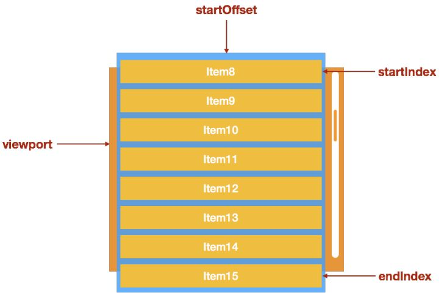

执行性能
前言
本人平时学习及收集内容，欢迎参入一起讨论。
内容
一、动画性能优化
动画性能不仅在前端，在任何客户端技术中心都是性能的重灾区，归根到底是需要大量的计算和渲染工作，远超普通的静态 UI
在前端实现动画有三种主流的方式：
- Canvas
- CSS3
- Dom
当然，DOM+JS 的这种方式由于极易引起浏览器或者回流，有非常的性能风险，对于这种动画的优化方法是不用 DOM 进行动画操作。
1.1 CSS3 动画优化原理
要想进行 CSS 的动画优化必须了解一定的浏览器原理，浏览器原理的几个概念，图层、重绘、回流。
图层
浏览器在渲染一个页面时，会将页面分为很多个图层，图层有大有小，每个图层上有一个或多个节点。在渲染 DOM 的时候，浏览器所做的工作实际上是：
- 获取 DOM 后分割为多个图层
- 对每个图层的节点计算样式结果（Recalculate style--样式重计算）
- 为每个节点生成图形和位置（Layout--回流和重布局）
- 将每个节点绘制填充到图层位图中（Paint Setup 和 Paint--重绘）
- 图层作为纹理上传至 GPU
- 符合多个图层到页面上生成最终屏幕图像（Composite Layers--图层重组）
回流
有些节点，当你改变他时，会需要重新布局（这也意味着需要重新计算其他被影响的节点的位置和大小）。
这种情况下，被影响的 DOM 树越大（可见节点），重绘所需要的时间就会越长，而渲染一帧动画的时间也相应变长。所以需要尽力避免这些属性
一些常用的改变时会触发重布局的属性：
盒子模型相关属性会触发重布局：
- width
- height
- padding
- margin
- display
- border-width
- border
- min-height
定位属性及浮动也会触发重布局：
- top
- bottom
- left
- right
- position
- float
- clear
改变节点内部文字结构也会触发重布局：
- text-align
- overflow-y
- font-weight
- overflow
- font-family
- line-height
- vertival-align
- white-space
- font-size
重绘
修改时只触发重绘的属性有：
- color
- border-style
- border-radius
- visibility
- text-decoration
- background
- background-image
- background-position
- background-size
- outline-color
- outline
- outline-style
- outline-width
- box-shadow
这些属性都不会修改节点的大小和位置，自然不会触发重布局，但是节点内部的渲染效果进行了改变，所以只需要重绘就可以了
1.2 CSS3 动画优化
经过上面的介绍，我们大致了解了浏览器的绘制原理，那么想进行 css 动画优化就要遵循以下原则：
- 尽量将动画放在一个独立图层，这样可以避免动画效果影响其他渲染层的元素
- 尽量避免回流和重绘
- 尽量使用 GPU，速度更快
因此，我们需要创建独立的合成层，那么如何才能创建合成层呢？
直接原因（direct reason）：
- 硬件加速的 iframe 元素（比如 iframe 嵌入的页面中有合成层）demo
- video 元素
- 覆盖在 video 元素上的视频控制栏
- 3D 或者三件加速的 2D Canvas 元素
- demo：普通 2D Canvas 不会提升为合成层
- demo：3D Canvas 提升为合成层
- 硬件加速的插件，比如 flash 等等
- 在 DPI 较高的屏幕上，fix 定位的元素会自动地被提升到合成层中。
- 有 3D transform
- backface-visibility 为 hidden
- 对 opacity、transform、filter、backdropfilter 应用了 animation 或者 transition（需要是 active 的）
- will-change 设置为 opacity、transform、top、left、bottom、right（其中 top、left 等需要设置明确的定位属性，如 relative 等）demo
- 后代元素原因：
- 有合成层后代同时本身有 transform、opacity（小于 1）、mask、filter、reflection 属性 demo
- 有合成层后代同时本身 fixed 定位 demo
- 有 3D transfrom 的合成层后代同时本身有 preserves-3d 属性 demo
- 有 3D transfrom 的合成层后代同时本身有 perspective 属性 demo
提升合成层的最好方式是使用 CSS 的 will-change 属性。从上一节合成层产生原因中，可以知道 will-change 设置为 opacity、transform、top、left、bottom、right 可以将元素提升为合成层。
那么如何避免重绘和回流？
具体而言，就是多使用 transform 或者 opacity 来实现动画效果，上述方法在合成层使用不会引起重绘和回流。
那么如何利用 GPU 加速呢？
以下几个属性会获得 GPU 加速
- opacity
- translate
- rotate
- scale
1.3 Canvas 动画优化
CSS 虽然更加简单也更加保证性能的下限，但是要想实现更加复杂可控的动画，那就必须用到 Canvas+JavaScript 这个组合了
Canvas 作为浏览器提供的 2D 图形绘制 API 本身有一定的复杂度，优化的方法非常多，我们仅仅介绍几种比较主流的优化方式
运用requestAnimationFrame
很多时候我们会使用setInterval这种定时器来完成 js 动画循环，但是定时器在单线程 js 环境下并不可靠，并不是能保证严格按照开发者的设置来进行动画循环，因此很多时候setInterval会引起掉帧的情况。
因此requestAnimationFrame的优势就体现出来了：
- 性能更好：优点是它能够将所有的动画都放到一个浏览器重绘周期里去做，这样能保存你的 CPU 的循环次数，提高性能
- 开销更小：
requestAnimationFrame是由浏览器专门为动画提供的 API，在运行时浏览器会自动优化方法的调用，并且如果页面不激活状态下的话，动画会自动暂停，有效节省了 CPU 开销
离屏 canvas
离屏渲染的原理是把离习 canvas 当成一个缓存区。把需要重复绘制的画面数据进行缓存起来，减少调用 canvas 的 API 的消耗：
- 创建离屏 canvas;
- 设置离屏 canvas 的宽度;
- 在离屏 canvas 中进行绘制;
- 在离屏 canvas 的全部或部分绘制到正在显示的 canvas 上
避免浮点运算
利用 canvas 进行动画绘制时，如果计算出来的坐标是浮点数，那么可能会出现 CSS Sub-pixel 的问题，也就是会自动将浮点数四舍五入转为整数，那么在动画的过程中，由于元素实际运动的轨迹并不是严格按照计算公式得到，那么就可能出现抖动的情况，同时也可能让元素的边缘出现抗锯齿失真这也是可能影响性能的一方面，因为一直在做不必要的取证运算。
减少调用 Canvas API
canvas 也是通过操纵 js 来绘制的，但是相比于正常的 js 操作，调用 canvas API 将更加消耗资源，所以在绘制之前请做好规划，通过适量 js 原生计算减少 canvas API 的调用是一件比较划算的事情
比如作粒子效果时，尽量少使用圆，最好使用方形，因为粒子太小，所以方形看上去也跟圆差不多。至于原因，很容易理解，我们画一个圆需要三个步骤：先 beginPath，然后用 arc 画弧，再用 fill 进行填充才能产生一个圆。但是画方形，只需要一个 fillRect 就可以了。虽然只是差了两个调用，当粒子对象数量达到一定时，这性能差距就会显示出来了。
web worker
在进行某些耗时操作，例如计算大量数据，一帧中包含了太多的绘制状态，大规模的 DOM 操作等，可能会导致页面卡顿，影响用户体验
web worker 最常用的场景就是大量的频繁计算，减轻主线程压力，如果遇到大规模的计算，可以通过此 API 分担主线程压力，此 API 兼容性已经很不错了，既然 canvas 可以用，那 web worker 也就完全可以考虑使用。
二、大量数据性能优化
2.1 虚拟列表
我们在实际开发过程中会碰到一种场景，前端需要渲染大量数据（几千行数万行数据不等），而且还不允许分页，这种情况下网页会出现掉帧、卡顿甚至假死的情况。
这是典型的大量数据渲染的场景，在不能使用分页的情况下通常采用虚拟列表的方式来解决此问题。
因为 DOM 元素的创建和渲染需要的时间成本很高，在大数据的情况下，完整渲染列表所需要的时间不可接收。其中一个解决思路就是在任何情况下只对可见区域进行渲染，可以达到极高的被盗渲染性能。
虚拟列表指的就是可视区域渲染的列表，重要的基本就是两个概念：
可滚动区域：假设有 1000 条数据，每个列表项的高度是 30，那么可滚动的区域的高度就是
1000*30。当用户改变列表的滚动条的当前滚动值的时候，会造成可见区域的内容的变更。可见区域：比如列表的高度是 300，右侧有纵向滚动条可以滚动，那么视觉可见的区域就是可见区域。实现虚拟列表就是处理滚动后的可见区域的变更，其中具体步骤如下：
计算当前可见区域起始数据的 startIndex
计算当前可见区域结束数据的 endindex
计算当前可见区域的数据，并渲染到页面中
计算 startIndex 对应的数据在整个列表中的偏移位置 startOffset，并设置到列表上建议参考下图理解一下上面的步骤：

虚拟滚动的具体实现原理可以参看饿了么前端的文章再谈前端虚拟列表的实现
2.2 Web Worker
大量数据的渲染环节我们可以采用虚拟列表或者虚拟表格的方式实现，但是大量数据的计算环节依然会产生浏览器假死或者卡顿的情况
通常情况下我们 CPU 密集型的任务都是交给后端计算的，但是有些时候我们需要处理一些离线场景或者解放后端压力，这个时候此方法就不奏效了
还有一种方法是计算切片，使用 setTimeout 拆分密集型任务，但是有一些计算无法利用此方法拆解，同时还可能产生副作用，这个方法需要视具体场景而动.
最后一种方法也是目前比较奏效的方法就是利用 Web Worker 进行多线程编程
Web Worker 是一种独立的线程（独立的执行环境），这就意味它可以完全和 UI 线程（主线程）并行的执行 js 代码，从而不会阻塞 UI，它和主线程是通过 onmessage 和 postMessage 接口进行通信的。
Web Worker 使得网页中进行多线程编程成为可能。当主线程在处理界面事件时，worker 可以在后台运行，帮你处理大量的数据计算，当计算完成，将计算结果返回给主线程，由主线程更新 DOM 元素。
Web Worker 的具体实现原理可以参看石墨前端的文章再谈前端虚拟列表的实现
参考资料
- (1.6w 字)浏览器与前端性能灵魂之问，请问你能接得住几个？（上）
- 前端性能清单
- 嗨，送你一张 Web 性能优化地图
- 2018 前端性能优化清单
- 性能优化三部曲之一——构建篇
- Web 性能
- 前端性能优化之旅
- 如何使页面交互更流畅
- 从 8 道面试题看浏览器渲染过程与性能优化
- 页面需要渲染 10 万条数据，应该怎么实现？
- 「前端进阶」高性能渲染十万条数据(虚拟列表)
- 「前端进阶」高性能渲染十万条数据(时间分片)
联系作者
平凡世界，贵在坚持。